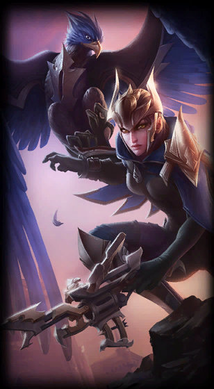

Quinn
Demacia's Wings
Class :
Marksman, Assassin
Lore :
Quinn is an elite ranger-knight of Demacia, who undertakes dangerous missions deep in enemy territory. She and her legendary eagle, Valor, share an unbreakable bond, and their foes are often slain before they realize they are fighting not one, but two of the kingdom's greatest heroes. Nimble and acrobatic when required, Quinn takes aim with her crossbow while Valor marks their elusive targets from above, making them a deadly pair on the battlefield.
Stats :
| Health | Health per level | Mana | Mana per level | Movement speed | Armor | Armor per level | MR | MR per level | Range | HP regen | HP regen per level | Mana regen | Mana regen per level | Crit | Crit per level | AD | AD per level | AS per level | AS |
|---|---|---|---|---|---|---|---|---|---|---|---|---|---|---|---|---|---|---|---|
| 533 | 85 | 269 | 35 | 335 | 28 | 3.5 | 30 | 0.5 | 525 | 5.5 | 0.55 | 6.97 | 0.4 | 0 | 0 | 59 | 2.4 | 3.1 | 0.668 |

Passive : Harrier
Valor, Quinn's Demacian eagle, periodically marks enemies as <font color='#FFF673'>Vulnerable</font>. Quinn's first basic attack against <font color='#FFF673'>Vulnerable</font> targets will deal bonus physical damage.